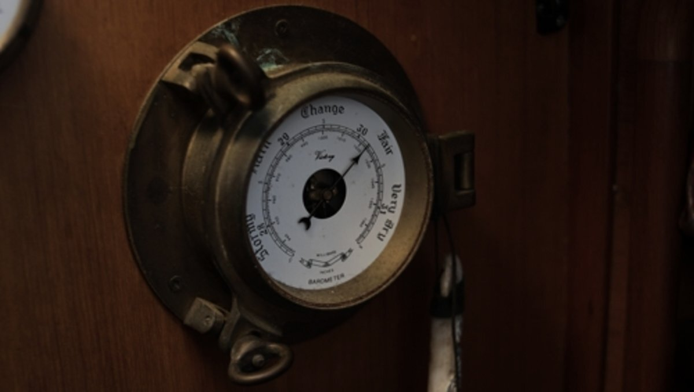

barometer
When the glass falls low, prepare for a blow; when the glass is high, let your kites fly.
A good barometer is a lifesaver on a boat. At sea, record the barometer readings every hour. If you see any sudden changes, this is telling of a change in weather. The larger the barometric change, the more extreme the weather change.
Aneroid barometers: Inside an aneroid barometer (aneroid = without fluid) is a small capsule. This capsule has had the air pumped out of it. When the air pressure rises, the sides of the capsule are compressed. The capsule is attached to levers which move a needle as the air pressure squeezes the capsule. A dial behind the needle tells you the air pressure and altitude or weather forecast. They are less accurate than mercurial barometers.
Wonder if your barometer is working? You can find out using a plastic bag. The idea is that if you seal it in with a pocket of air, and press on the bag, if the unit isn't faulty, the needle will move clockwise as the pressure within the bag changes.